腾讯云代码助手支持配置 SSO（单点登录）企微认证源，以实现使用企微账号进行统一身份认证。通过本文档，您将了解到配置企微认证源的具体步骤，包括在企微和腾讯云代码助手平台上所需进行的配置。
说明：
CodeBuddy 旗舰版使用腾讯统一身份进行登录认证管理，如需配置请参见腾讯统一身份-企业级登录。
操作步骤
步骤一：创建企业自建应用
配置企微认证源需要在 企业微信管理后台/应用管理 上通过自建应用来完成，您可以按下图指引操作，或参见 企微-如何创建企业自建应用。
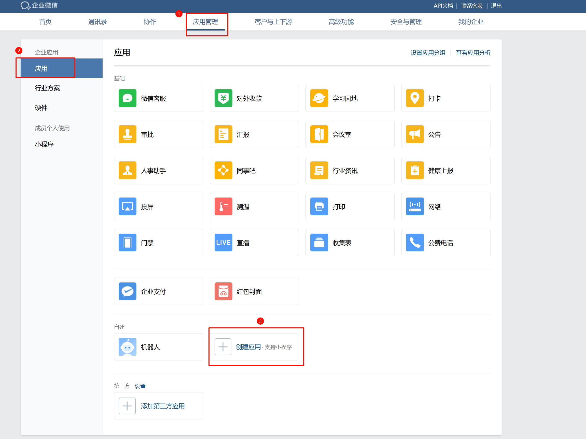
填写表单并完成应用创建。
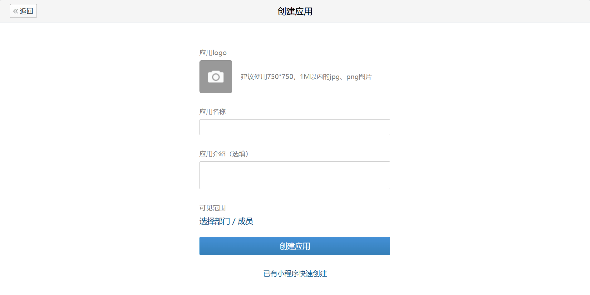
步骤二：配置自建应用权限
注意：
根据企微 企业自建应用安全性升级公告，请务必完成下图中的三项配置1.可信域名、2.企业可信 IP、3.网页应用授权回调，否则无法正常登录。
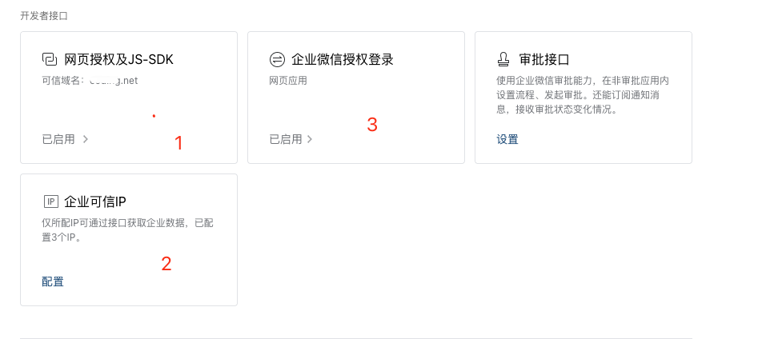
可信域名填写企业自有域名即可，需注意备案主体与企微主体相同或有关联关系。
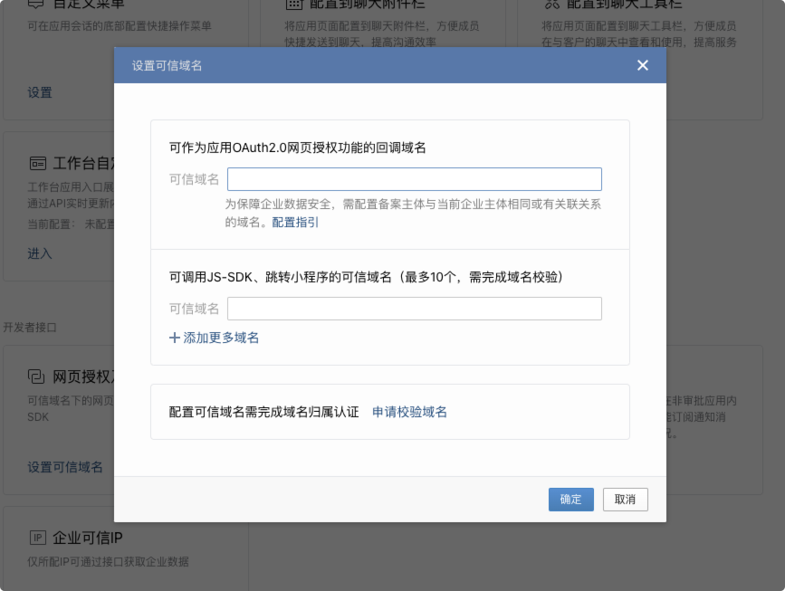
获取企业可信 IP，获取方式如下：
| 版本 | 可信 IP 填写内容 |
|---|---|
| 旗舰版 | 暂不支持 |
| 专享版 | 请联系技术人员获取 |
| 企业版 | 请联系技术人员获取 |
填写到下图红框当中：
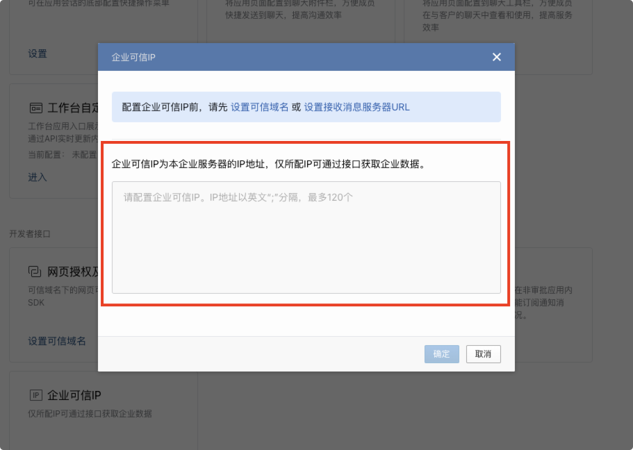
步骤三：配置认证源信息
注意：
认证源集成需选择企业专属认证账号，当前仅新建企业支持该类账号模式，选择后无法更改，请谨慎操作。
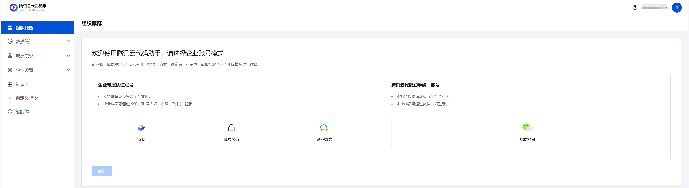
进入 腾讯云代码助手管理端，选择企业设置 > 登录认证，单击添加认证源。
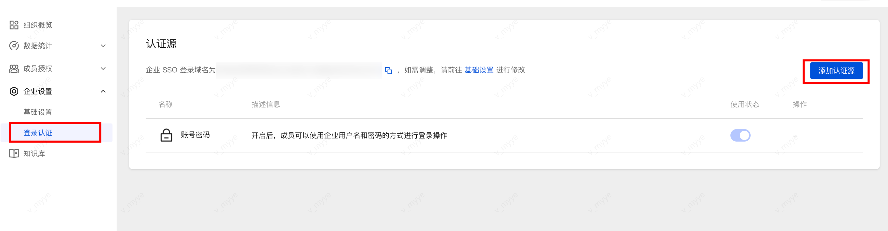
选择企业微信并添加。
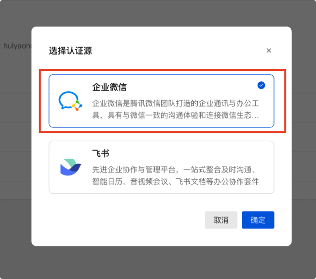
进入认证源配置流程，将企微企业 ID、企微自建应用的的 Agent ID 和 Secret 填入输入框，并复制回调地址，填写至企微自建应用的企业微信授权登录处。
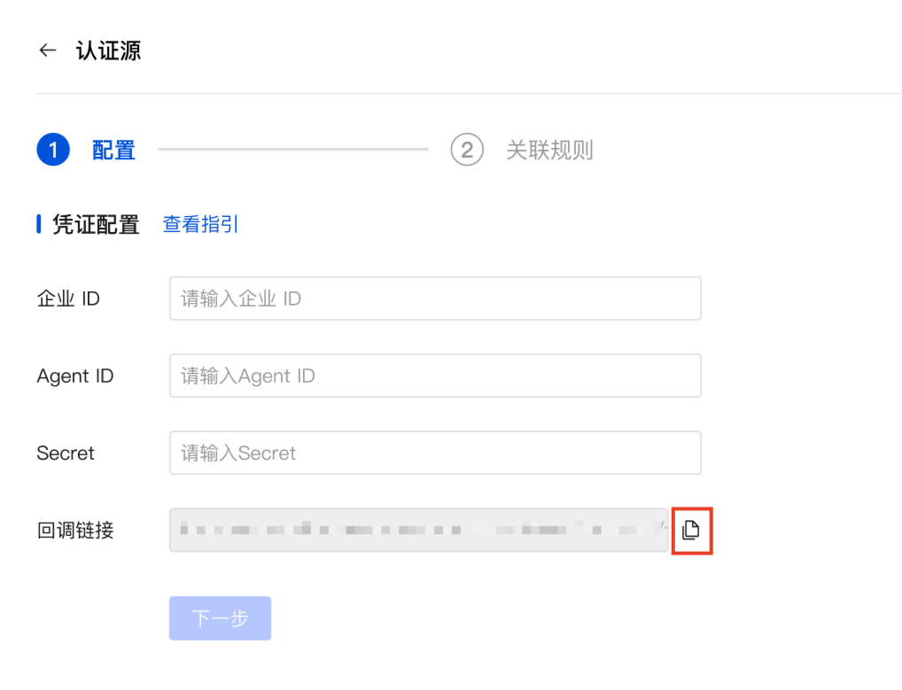
说明：
回调链接只需要填写企业域名即可，例如：
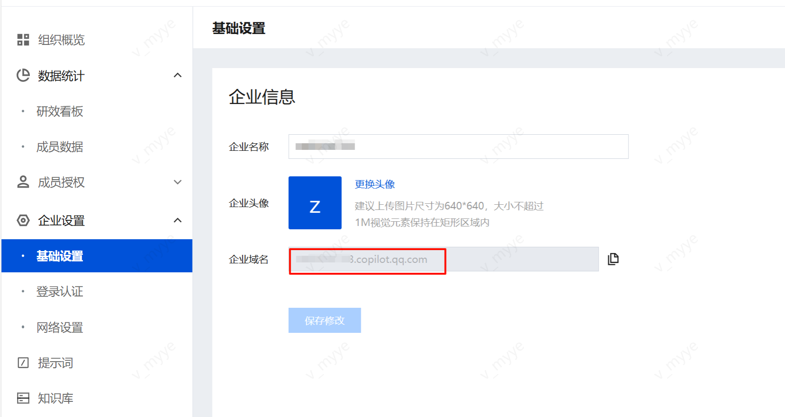
企微 ID 获取位置如图：
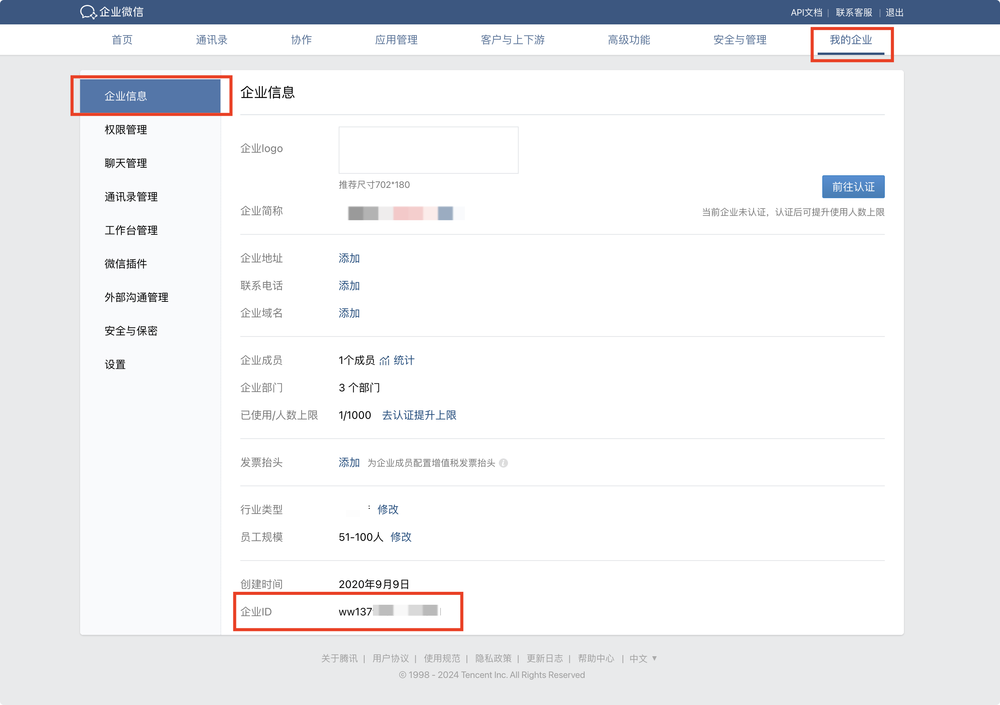
企微自建应用 Agent ID、Secret 获取位置如图：
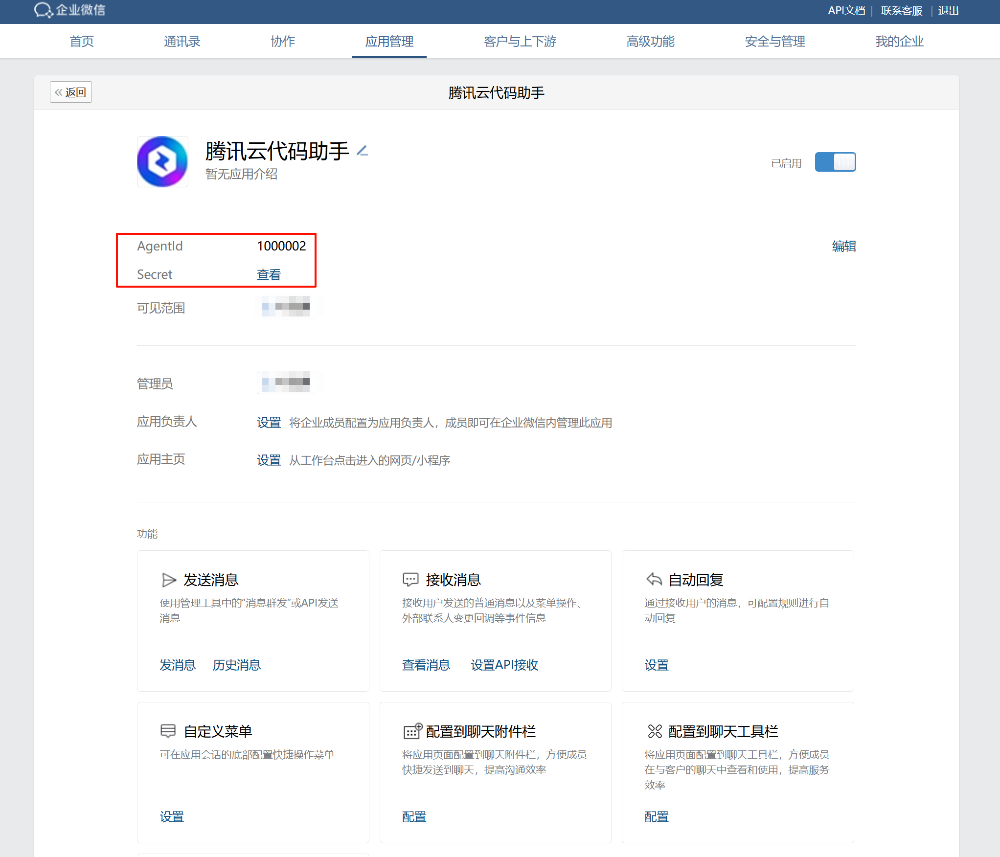
企微自建应用重定向 URL 填写位置如图：
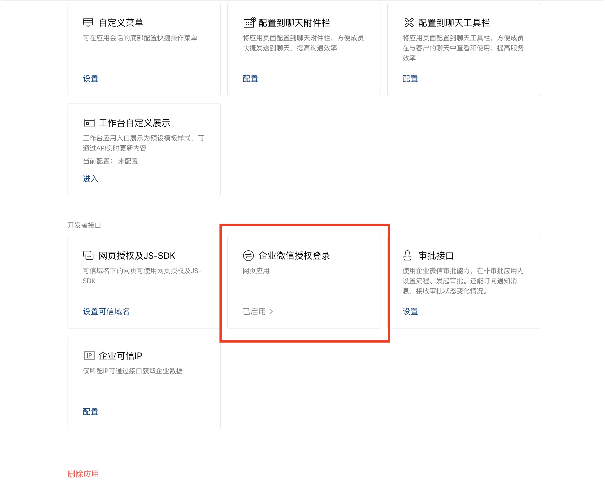
单击企业微信授权登录，进入配置详情页，在 Web 网页处填写回调链接。
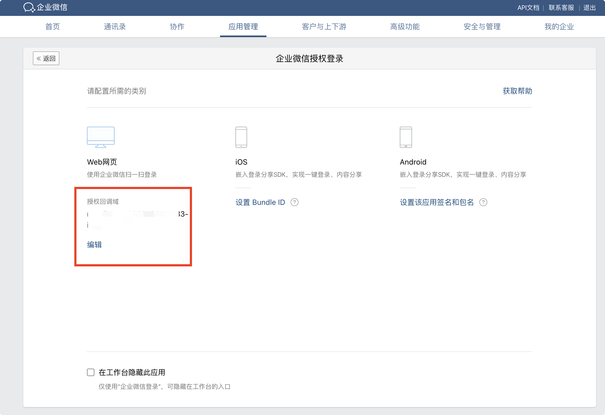
配置完成后，单击下一步，进行关联规则配置，暂不支持配置字段匹配逻辑，可配置以下内容：
说明：
- 每次登录成功时，更新用户信息：建议开启，每次用户登录时，系统将自动从认证源获取用户信息更新到代码助手当中。
- 未匹配成功时，则执行以下逻辑：建议开启“新建用户”，若拒绝登录，则首次登录代码助手的用户将无法成功登录。
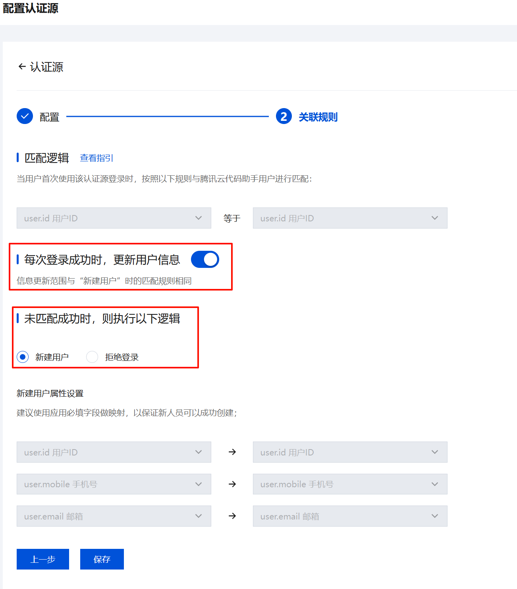
- 完成配置后，单击保存即可。
步骤四：启用认证源登录
进入企业管理后台的成员授权-成员与部门版块，点击前往 腾讯统一身份/通讯录跳转至「腾讯统一身份」平台：
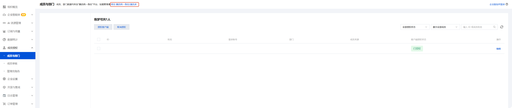
在侧边栏打开登录-认证源，在我的认证源中将企微打开即可。若不需要其它认证源则将其关闭，仅保留企微认证源。
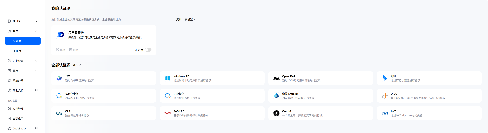
用户登录
企业用户可通过 SSO 登录，选择企微登录方式，即可登录至企业账号，详情请参见 登录及更新。